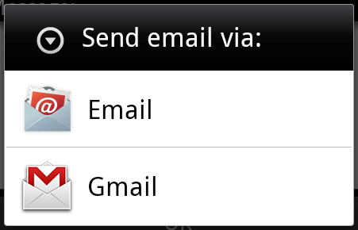
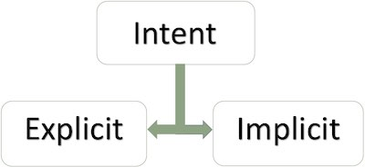
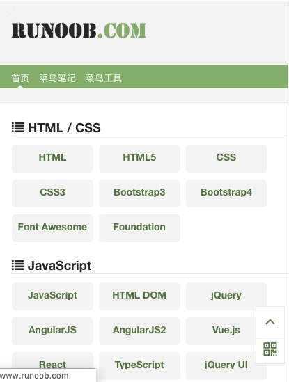
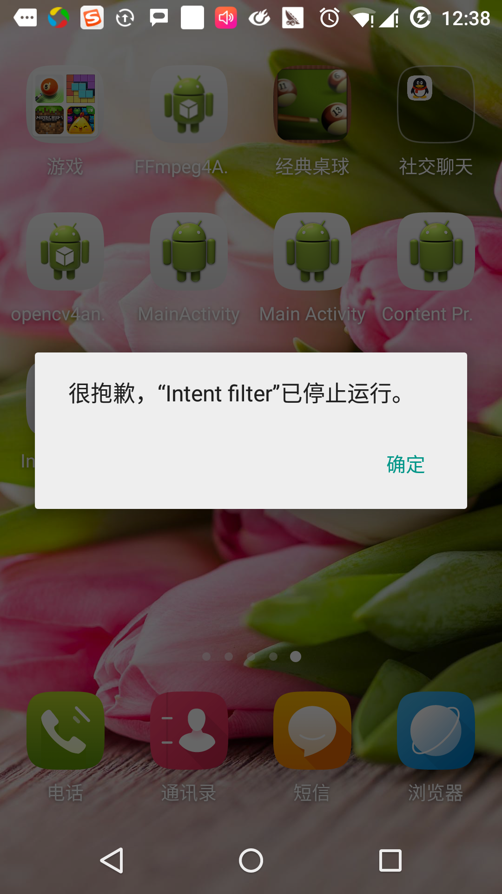

Android Intent y Filter
Un Intent de Android es una descripción abstracta de una operación a realizar. Puede usarse con startActivity para iniciar una actividad, con broadcastIntent para enviar una transmisión a cualquier componente receptor de transmisiones que esté interesado en ella, y con startService(Intent) o bindService(Intent, ServiceConnection, int) para comunicarse con un servicio en segundo plano.
El propio Intent (un objeto Intent) es una estructura de datos pasiva que contiene una descripción abstracta de la operación a realizar.
Por ejemplo, tienes una actividad que necesita abrir el cliente de correo y enviar un correo electrónico a través del dispositivo Android. Para este propósito, tu actividad necesita enviar un ACTION_SEND con el selector adecuado al manejador de intents de Android. El selector especificado proporciona la interfaz adecuada para que el usuario decida cómo enviar sus datos de correo.
Intent email = new Intent(Intent.ACTION_SEND, Uri.parse("mailto:"));
email.putExtra(Intent.EXTRA_EMAIL, recipients);
email.putExtra(Intent.EXTRA_SUBJECT, subject.getText().toString());
email.putExtra(Intent.EXTRA_TEXT, body.getText().toString());
startActivity(Intent.createChooser(email, "Choose an email client from..."));
La sintaxis anterior llama al método startActivity para abrir la actividad de correo. El resultado de la ejecución del código se ve así:

Por ejemplo, tienes una actividad que necesita abrir una URL en el navegador en el dispositivo Android. Para este propósito, tu actividad envía un intent ACTION_WEB_SEARCH al manejador de intents de Android para abrir la URL dada en el navegador. El manejador de intents analiza una serie de actividades y selecciona la que mejor se adapta a tu intent; en este caso, la actividad del navegador web. El manejador de intents pasa tu dirección web al navegador web y abre la actividad del navegador web.
String q = "https://www.runoob.com"; Intent intent = new Intent(Intent.ACTION_WEB_SEARCH ); intent.putExtra(SearchManager.QUERY, q); startActivity(intent);
El ejemplo anterior buscará "www.runoob.com" en el motor de búsqueda de Android y mostrará los resultados de la palabra clave en una actividad.
Cada componente (actividad, servicio, receptor de transmisiones) tiene un mecanismo independiente para pasar intents.
| N.º | Método y descripción |
|---|---|
| 1 | Context.startActivity(): El intent se pasa a este método para iniciar una nueva actividad o para que una actividad existente haga algo nuevo. |
| 2 | Context.startService(): El intent se pasa a este método; iniciará un servicio o enviará nueva información a un servicio existente. |
| 3 | Context.sendBroadcast(): El intent se pasa a este método; la información se entregará a todos los receptores de transmisiones interesados en ella. |
Objeto Intent
Un objeto Intent es un paquete de información. El intent que recibe un componente es como la información que recibe el sistema Android.
El objeto Intent incluye los siguientes componentes, dependiendo de lo que se vaya a comunicar o ejecutar.
Acción (Action)
Esta es la parte obligatoria del objeto Intent y se representa como una cadena. En los intents de transmisión, la acción se informa una vez que ocurre. La acción determina en gran medida cómo se organizan las demás partes del intent. La clase Intent define una serie de constantes de acción correspondientes a diferentes intents. Aquí hay unaAcciones estándar de Intent de Androidlista.
La acción en un objeto Intent se puede establecer con el método setAction() y leer con el método getAction().
Datos (Data)
Agrega especificaciones de datos al filtro de Intent. Esta especificación puede ser solo un tipo de datos (como un atributo de tipo MIME), una URI, o tanto el tipo de datos como una URI. La URI se especifica mediante atributos en distintas partes.
Estos atributos que especifican el formato de URL son opcionales, pero también son independientes entre sí:
- Si el filtro de intent no especifica un esquema, todos los demás atributos URI serán ignorados.
- Si no se especifica un host para el filtro, se ignorarán los atributos de puerto y todos los atributos de ruta.
El método setData() solo puede especificar datos mediante URI, setType() solo puede especificar datos mediante MIME type, y setDataAndType() puede especificar tanto URI como MIME type. La URI se lee con getData() y el tipo con getType().
A continuación se muestran algunos ejemplos de grupos de acción/datos:
| N.º | Grupo de acción/datos y descripción |
|---|---|
| 1 | ACTION_VIEW content://contacts/people/1: Muestra la información del usuario con ID 1. |
| 2 | ACTION_DIAL content://contacts/people/1: Muestra el marcador telefónico y rellena los datos del usuario 1. |
| 3 | ACTION_VIEW tel:123: Muestra el marcador telefónico y rellena el número dado. |
| 4 | ACTION_DIAL tel:123: Muestra el marcador telefónico y rellena el número dado. |
| 5 | ACTION_EDIT content://contacts/people/1: Edita la información del usuario con ID 1. |
| 6 | ACTION_VIEW content://contacts/people/: Muestra la lista de contactos para su visualización. |
| 7 | ACTION_SET_WALLPAPER: Muestra la configuración para elegir fondo de pantalla. |
| 8 | ACTION_SYNC: Sincroniza datos. El valor predeterminado es: android.intent.action.SYNC |
| 9 | ACTION_SYSTEM_TUTORIAL: Inicia el tutorial definido por la plataforma (tutorial predeterminado o tutorial de inicio). |
| 10 | ACTION_TIMEZONE_CHANGED: Notifica cuando se cambia la zona horaria. |
| 11 | ACTION_UNINSTALL_PACKAGE: Ejecuta el desinstalador predeterminado. |
Categoría
La categoría es una parte opcional del intent, una cadena que contiene información adicional sobre el tipo de componente que necesita manejar el intent. El método addCategory() agrega una categoría al objeto Intent, removeCategory() elimina una categoría previamente agregada, y getCategories() obtiene todas las categorías establecidas en el objeto Intent. Aquí hay unaCategorías estándar de Intent de Androidlista.
Puedes consultar los filtros de Intent en la siguiente sección para entender cómo usamos las categorías para seleccionar la actividad adecuada mediante el intent correspondiente.
Datos adicionales
Estos son datos adicionales descritos como pares clave-valor que se pasan al componente que necesita manejar el intent. Se establecen con el método putExtras() y se leen con getExtras(). Aquí hay unaDatos adicionales estándar de Intent de Androidlista.
Marcas
Estas marcas son partes opcionales del intent que indican cómo debe iniciar Android la actividad y cómo procesarla después de iniciarse, etc.
| N.º | Marca y explicación |
|---|---|
| 1 | FLAG_ACTIVITY_CLEAR_TASK: Si se establece en el intent y se pasa a través de Context.startActivity, esta marca hará que todas las tareas existentes asociadas con la actividad se eliminen antes de que la actividad se inicie. La actividad se convertirá en la raíz de una tarea vacía y todas las actividades antiguas se finalizarán. Esta marca se puede usar junto con FLAG_ACTIVITY_NEW_TASK. |
| 2 | FLAG_ACTIVITY_CLEAR_TOP: Si se establece esta marca, la actividad se iniciará en la tarea actualmente en ejecución. Esto no inicia una nueva instancia de actividad; todas las actividades que están encima se cierran y este intent se pasa como un nuevo intent a la actividad existente (actualmente en la parte superior). |
| 3 | FLAG_ACTIVITY_NEW_TASK: Esta marca se usa generalmente para dar a la actividad un comportamiento de estilo 'lanzador': proporciona al usuario un dato que puede ejecutarse de forma independiente e inicia la actividad de forma completa e independiente. |
Nombre del componente
El objeto nombre de componente es un campo opcional que representa la clase de actividad, servicio o receptor de transmisiones. Si se establece, el objeto Intent se pasa a la instancia de la clase diseñada; de lo contrario, Android usa otra información dentro del intent para localizar un objetivo adecuado. El nombre del componente se establece con setComponent(), setClass() o setClassName(), y se obtiene con getComponent().
Tipos de Intent
Android admite dos tipos de intents.

Intent explícito
Los intents explícitos se utilizan para conectar el mundo interno de la aplicación. Supón que necesitas conectar una actividad con otra; podemos usar un intent explícito. La siguiente imagen muestra la conexión de la primera actividad a la segunda al hacer clic en un botón.

Estos intents especifican el componente de destino por su nombre. Generalmente se usan para información interna de la aplicación, por ejemplo, una actividad inicia una actividad secundaria o una actividad hermana. Por ejemplo:
// 通过指定类名的显式意图 Intent i = new Intent(FirstActivity.this, SecondAcitivity.class); // 启动目标活动 startActivity(i);
Intent implícito
Estos intents no nombran un destino; el campo de nombre del componente está vacío. Los intents implícitos se usan a menudo para activar componentes de otras aplicaciones. Por ejemplo:
Intent read1=new Intent(); read1.setAction(android.content.Intent.ACTION_VIEW); read1.setData(ContactsContract.Contacts.CONTENT_URI); startActivity(read1);
El código anterior dará el siguiente resultado:

El componente de destino recibe el intent y puede usar el método getExtras() para obtener los datos adicionales enviados por el componente de origen. Por ejemplo:
// 在代码中的合适位置获取包对象
Bundle extras = getIntent().getExtras();
// 通过键解压数据
String value1 = extras.getString("Key1");
String value2 = extras.getString("Key2");
Ejemplos
El siguiente ejemplo demuestra el uso de intents de Android para iniciar la funcionalidad de varias aplicaciones integradas de Android.
| Pasos | Descripción |
|---|---|
| 1 | Cree una aplicación de Android usando el IDE de Android Studio, asígnele el nombre "Intent filter", con el paquete com.runoob.intentfilter. Al crear el proyecto, asegúrese de que el SDK de destino y la compilación se realicen con la versión más reciente del SDK de Android para usar las API avanzadas. |
| 2 | Modifique el archivo src/com.runoob.intentfilter/MainActivity.java y agregue código para definir dos listeners que correspondan a los dos botones "Iniciar navegador" e "Iniciar teléfono". |
| 3 | Modifique el archivo de diseño res/layout/activity_main.xml y agregue 3 botones en el diseño lineal. |
| 4 | Inicie el emulador de Android para ejecutar la aplicación y verifique el resultado de los cambios realizados en la aplicación. |
El contenido del archivo src/com.runoob.intentfilter/MainActivity.java es el siguiente:
package com.runoob.intentfilter;
import android.content.Intent;
import android.net.Uri;
import android.support.v7.app.ActionBarActivity;
import android.os.Bundle;
import android.view.Menu;
import android.view.MenuItem;
import android.view.View;
import android.widget.Button;
public class MainActivity extends ActionBarActivity {
Button b1,b2;
@Override
protected void onCreate(Bundle savedInstanceState) {
super.onCreate(savedInstanceState);
setContentView(R.layout.activity_main);
b1=(Button)findViewById(R.id.button);
b1.setOnClickListener(new View.OnClickListener() {
@Override
public void onClick(View v) {
Intent i = new Intent(android.content.Intent.ACTION_VIEW, Uri.parse("https://www.runoob.com"));
startActivity(i);
}
});
b2=(Button)findViewById(R.id.button2);
b2.setOnClickListener(new View.OnClickListener() {
@Override
public void onClick(View v) {
Intent i = new Intent(android.content.Intent.ACTION_VIEW,Uri.parse("tel:9510300000"));
startActivity(i);
}
});
}
@Override
public boolean onCreateOptionsMenu(Menu menu) {
getMenuInflater().inflate(R.menu.menu_main, menu);
return true;
}
@Override
public boolean onOptionsItemSelected(MenuItem item) {
// Handle action bar item clicks here. The action bar will
// automatically handle clicks on the Home/Up button, so long
// as you specify a parent activity in AndroidManifest.xml.
int id = item.getItemId();
//noinspection SimplifiableIfStatement
if (id == R.id.action_settings) {
return true;
}
return super.onOptionsItemSelected(item);
}
}
El contenido del archivo res/layout/activity_main.xml es el siguiente:
<RelativeLayout xmlns:android="http://schemas.android.com/apk/res/android"
xmlns:tools="http://schemas.android.com/tools"
android:layout_width="match_parent"
android:layout_height="match_parent"
android:paddingLeft="@dimen/activity_horizontal_margin"
android:paddingRight="@dimen/activity_horizontal_margin"
android:paddingTop="@dimen/activity_vertical_margin"
android:paddingBottom="@dimen/activity_vertical_margin"
tools:context=".MainActivity">
<TextView
android:id="@+id/textView1"
android:layout_width="wrap_content"
android:layout_height="wrap_content"
android:text="意图实例"
android:layout_alignParentTop="true"
android:layout_centerHorizontal="true"
android:textSize="30dp" />
<TextView
android:id="@+id/textView2"
android:layout_width="wrap_content"
android:layout_height="wrap_content"
android:text="www.runoob.com"
android:textColor="#ff87ff09"
android:textSize="30dp"
android:layout_below="@+id/textView1"
android:layout_centerHorizontal="true" />
<ImageButton
android:layout_width="wrap_content"
android:layout_height="wrap_content"
android:id="@+id/imageButton"
android:src="@drawable/ic_launcher.html"
android:layout_below="@+id/textView2"
android:layout_centerHorizontal="true" />
<EditText
android:layout_width="wrap_content"
android:layout_height="wrap_content"
android:id="@+id/editText"
android:layout_below="@+id/imageButton"
android:layout_alignRight="@+id/imageButton"
android:layout_alignEnd="@+id/imageButton" />
<Button
android:layout_width="wrap_content"
android:layout_height="wrap_content"
android:text="启动浏览器"
android:id="@+id/button"
android:layout_alignTop="@+id/editText"
android:layout_alignRight="@+id/textView1"
android:layout_alignEnd="@+id/textView1"
android:layout_alignLeft="@+id/imageButton"
android:layout_alignStart="@+id/imageButton" />
<Button
android:layout_width="wrap_content"
android:layout_height="wrap_content"
android:text="启动电话"
android:id="@+id/button2"
android:layout_below="@+id/button"
android:layout_alignLeft="@+id/button"
android:layout_alignStart="@+id/button"
android:layout_alignRight="@+id/textView2"
android:layout_alignEnd="@+id/textView2" />
</RelativeLayout>
El siguiente es el contenido de res/values/strings.xml, que define dos nuevas constantes.
<?xml version="1.0" encoding="utf-8"?> <resources> <string name="app_name">Intent filter</string> <string name="action_settings">Settings</string> </resources>
El siguiente es el contenido del AndroidManifest.xml predeterminado:
<?xml version="1.0" encoding="utf-8"?>
<manifest xmlns:android="http://schemas.android.com/apk/res/android"
package="com.runoob.intentfilter"
android:versionCode="1"
android:versionName="1.0" >
<uses-sdk
android:minSdkVersion="8"
android:targetSdkVersion="22" />
<application
android:allowBackup="true"
android:icon="@drawable/ic_launcher"
android:label="@string/app_name"
android:theme="@style/Base.Theme.AppCompat" >
<activity
android:name="com.runoob.intentfilter.MainActivity"
android:label="@string/app_name" >
<intent-filter>
<action android:name="android.intent.action.MAIN" />
<category android:name="android.intent.category.LAUNCHER" />
</intent-filter>
</activity>
</application>
</manifest>
Ejecutemos la aplicación Intent filter que acabamos de modificar. Supongo que ya creó un AVD al configurar el entorno. Abra el archivo de actividad de su proyecto y haga clic en el ícono en la barra de herramientas. Haga clic en el ícono para ejecutar la aplicación en Android Studio. Android Studio instalará la aplicación en el AVD y la iniciará. Si todo va bien, se mostrará lo siguiente en la ventana del emulador:
Haga clic en el ícono para ejecutar la aplicación en Android Studio. Android Studio instalará la aplicación en el AVD y la iniciará. Si todo va bien, se mostrará lo siguiente en la ventana del emulador:

Ahora haga clic en el botón "Iniciar navegador". Esto iniciará un navegador según la configuración y mostrará https://www.runoob.com de la siguiente manera:

De manera similar, puede hacer clic en el botón "Iniciar teléfono" para abrir la interfaz del teléfono, lo que le permitirá marcar el número de teléfono ya proporcionado.
Filtro de Intent
Ya ha visto cómo usar intents para invocar otra actividad. El sistema operativo Android usa filtros para especificar el conjunto de actividades, servicios y receptores de transmisión que manejan los intents, basándose en la acción, la categoría y el patrón de datos especificados por el intent. En el archivo manifest se usa el elemento <intent-filter> para listar las acciones, categorías y tipos de datos correspondientes en actividades, servicios y receptores de transmisión.
El siguiente ejemplo muestra una parte del archivo AndroidManifest.xml, que especifica que una actividad com.runoob.intentfilter.CustomActivity puede ser invocada mediante la acción, la categoría y los datos configurados:
<activity android:name=".CustomActivity"
android:label="@string/app_name">
<intent-filter>
<action android:name="android.intent.action.VIEW" />
<action android:name="com.example.MyApplication.LAUNCH" />
<category android:name="android.intent.category.DEFAULT" />
<data android:scheme="http" />
</intent-filter>
</activity>
Cuando la actividad queda definida por el filtro anterior, otras actividades pueden invocar esta actividad de la siguiente manera: usar la acción android.intent.action.VIEW, usar la acción com.runoob.intentfilter.LAUNCH y proporcionar la categoría android.intent.category.DEFAULT.
El elemento <data> especifica el tipo de datos que espera la actividad invocada. En el ejemplo anterior, los datos que espera la actividad personalizada comienzan con "http://".
Existe el caso en que, mediante filtros, un intent se puede pasar a varias actividades o servicios, y se le preguntará al usuario qué componente iniciar. Si no se encuentra un componente de destino, se producirá una excepción.
Antes de invocar una actividad, Android realiza una serie de pruebas de verificación:
- El filtro <intent-filter> debe enumerar una o más acciones y no puede estar vacío; el filtro debe contener al menos un
elemento <action>; de lo contrario, se bloquearán todos los intents. Si se mencionan varias acciones, Android intenta hacer coincidir una de las acciones mencionadas antes de invocar la actividad. - El filtro <intent-filter> puede listar 0, 1 o más categorías. Si no se menciona ninguna categoría, Android supera esta prueba. Si se mencionan varias categorías, el intent pasa la prueba de tipo; cada categoría del objeto Intent debe coincidir con una de las categorías del filtro.
- Cadaelemento <data> puede especificar un URI y un tipo de datos (tipo de medio). Hay atributos independientes, como cada parte del URI: esquema, host, puerto y ruta. Si el intent contiene un URI y un tipo, solo pasa la prueba de la parte de tipo de datos si su tipo coincide con uno de los tipos enumerados en el filtro.
Ejemplos
El siguiente ejemplo es una modificación del ejemplo anterior. Aquí veremos cómo Android resuelve el conflicto si un intent invoca dos actividades definidas; cómo usar filtros para invocar una actividad personalizada; y si no se define una actividad adecuada para el intent, se producirá una excepción.
| Pasos | Descripción |
|---|---|
| 1 | Cree una aplicación de Android usando el IDE de Android Studio, asígnele el nombre "Intent filter" y el paquete com.runoob.intentfilter. Al crear el proyecto, asegúrese de que el SDK de destino y la compilación se realicen con la versión más reciente del SDK de Android para usar las API avanzadas. |
| 2 | Modifique el archivo src/com.runoob.intentfilter/MainActivity.java y agregue código para definir tres listeners que correspondan a los tres botones definidos en el archivo de diseño. |
| 3 | Agregue el archivo src/com.runoob.intentfilter/CustomActivity.java para contener una actividad que pueda ser invocada por diferentes intents. |
| 4 | Modifique el archivo res/layout/activity_main.xml y agregue tres botones en el diseño lineal. |
| 5 | Agregue el archivo de diseño res/lauout/custom_view.xml y agregue un simple |
| 6 | Modifique el archivo AndroidManifest.xml y agregue <intent-filter> para definir las reglas del intent que invocan la actividad personalizada. |
| 7 | Inicie el emulador de Android para ejecutar la aplicación y verifique el resultado de los cambios realizados en la aplicación. |
El siguiente es el contenido de src/com.runoob.intentfilter/MainActivity.java:
package com.runoob.intentfilter;
import android.content.Intent;
import android.net.Uri;
import android.support.v7.app.ActionBarActivity;
import android.os.Bundle;
import android.view.Menu;
import android.view.MenuItem;
import android.view.View;
import android.widget.Button;
public class MainActivity extends ActionBarActivity {
Button b1,b2,b3;
@Override
protected void onCreate(Bundle savedInstanceState) {
super.onCreate(savedInstanceState);
setContentView(R.layout.activity_main);
b1=(Button)findViewById(R.id.button);
b1.setOnClickListener(new View.OnClickListener() {
@Override
public void onClick(View v) {
Intent i = new Intent(android.content.Intent.ACTION_VIEW,Uri.parse("https://www.runoob.com"));
startActivity(i);
}
});
b2=(Button)findViewById(R.id.button2);
b2.setOnClickListener(new View.OnClickListener() {
@Override
public void onClick(View v) {
Intent i = new Intent("com.runoob.intentfilter.LAUNCH",Uri.parse("https://www.runoob.com"));
startActivity(i);
}
});
b3=(Button)findViewById(R.id.button3);
b3.setOnClickListener(new View.OnClickListener() {
@Override
public void onClick(View v) {
Intent i = new Intent("com.runoob.intentfilter.LAUNCH",Uri.parse("https://www.runoob.com"));
startActivity(i);
}
});
}
@Override
public boolean onCreateOptionsMenu(Menu menu) {
// Inflate the menu; this adds items to the action bar if it is present.
getMenuInflater().inflate(R.menu.menu_main, menu);
return true;
}
@Override
public boolean onOptionsItemSelected(MenuItem item) {
// Handle action bar item clicks here. The action bar will
// automatically handle clicks on the Home/Up button, so long
// as you specify a parent activity in AndroidManifest.xml.
int id = item.getItemId();
//noinspection SimplifiableIfStatement
if (id == R.id.action_settings) {
return true;
}
return super.onOptionsItemSelected(item);
}
}
El siguiente es el contenido de src/com.runoob.intentfilter/CustomActivity.java:
package com.runoob.intentfilter;
import android.app.Activity;
import android.net.Uri;
import android.os.Bundle;
import android.widget.TextView;
public class CustomActivity extends Activity {
@Override
public void onCreate(Bundle savedInstanceState) {
super.onCreate(savedInstanceState);
setContentView(R.layout.custom_view);
TextView label = (TextView) findViewById(R.id.show_data);
Uri url = getIntent().getData();
label.setText(url.toString());
}
}
El siguiente es el contenido de res/layout/activity_main.xml:
<RelativeLayout xmlns:android="http://schemas.android.com/apk/res/android"
xmlns:tools="http://schemas.android.com/tools"
android:layout_width="match_parent"
android:layout_height="match_parent"
android:paddingLeft="@dimen/activity_horizontal_margin"
android:paddingRight="@dimen/activity_horizontal_margin"
android:paddingTop="@dimen/activity_vertical_margin"
android:paddingBottom="@dimen/activity_vertical_margin"
tools:context=".MainActivity">
<TextView
android:id="@+id/textView1"
android:layout_width="wrap_content"
android:layout_height="wrap_content"
android:text="意图实例"
android:layout_alignParentTop="true"
android:layout_centerHorizontal="true"
android:textSize="30dp" />
<TextView
android:id="@+id/textView2"
android:layout_width="wrap_content"
android:layout_height="wrap_content"
android:text="www.runoob.com"
android:textColor="#ff87ff09"
android:textSize="30dp"
android:layout_below="@+id/textView1"
android:layout_centerHorizontal="true" />
<ImageButton
android:layout_width="wrap_content"
android:layout_height="wrap_content"
android:id="@+id/imageButton"
android:src="@drawable/ic_launcher.html"
android:layout_below="@+id/textView2"
android:layout_centerHorizontal="true" />
<EditText
android:layout_width="wrap_content"
android:layout_height="wrap_content"
android:id="@+id/editText"
android:layout_below="@+id/imageButton"
android:layout_alignRight="@+id/imageButton"
android:layout_alignEnd="@+id/imageButton" />
<Button
android:layout_width="wrap_content"
android:layout_height="wrap_content"
android:text="通过View动作启动浏览器"
android:id="@+id/button"
android:layout_alignTop="@+id/editText"
android:layout_alignRight="@+id/textView1"
android:layout_alignEnd="@+id/textView1"
android:layout_alignLeft="@+id/imageButton"
android:layout_alignStart="@+id/imageButton" />
<Button
android:layout_width="wrap_content"
android:layout_height="wrap_content"
android:text="通过Launch动作启动浏览器"
android:id="@+id/button2"
android:layout_below="@+id/button"
android:layout_alignLeft="@+id/button"
android:layout_alignStart="@+id/button"
android:layout_alignRight="@+id/textView2"
android:layout_alignEnd="@+id/textView2" />
<Button
android:layout_width="wrap_content"
android:layout_height="wrap_content"
android:text="异常情况"
android:id="@+id/button3"
android:layout_below="@+id/button2"
android:layout_alignLeft="@+id/button2"
android:layout_alignStart="@+id/button2"
android:layout_alignRight="@+id/textView2"
android:layout_alignEnd="@+id/textView2" />
</RelativeLayout>
El siguiente es el contenido del archivo res/layout/custom_view.xml:
<?xml version="1.0" encoding="utf-8"?>
<LinearLayout xmlns:android="http://schemas.android.com/apk/res/android"
android:orientation="vertical"
android:layout_width="fill_parent"
android:layout_height="fill_parent">
<TextView android:id="@+id/show_data"
android:layout_width="fill_parent"
android:layout_height="400dp"/>
</LinearLayout>
El siguiente es el contenido del archivo res/values/strings.xml:
<?xml version="1.0" encoding="utf-8"?> <resources> <string name="app_name">My Application</string> <string name="action_settings">Settings</string> </resources>
El siguiente es el contenido del archivo AndroidManifest.xml:
<?xml version="1.0" encoding="utf-8"?>
<manifest xmlns:android="http://schemas.android.com/apk/res/android"
package="com.runoob.intentfilter"
android:versionCode="1"
android:versionName="1.0" >
<uses-sdk
android:minSdkVersion="8"
android:targetSdkVersion="22" />
<application
android:allowBackup="true"
android:icon="@drawable/ic_launcher"
android:label="@string/app_name"
android:theme="@style/Base.Theme.AppCompat" >
<activity
android:name="com.runoob.intentfilter.MainActivity"
android:label="@string/app_name" >
<intent-filter>
<action android:name="android.intent.action.MAIN" />
<category android:name="android.intent.category.LAUNCHER" />
</intent-filter>
</activity>
<activity android:name="com.runoob.intentfilter.CustomActivity"
android:label="@string/app_name">
<intent-filter>
<action android:name="android.intent.action.VIEW" />
<action android:name="com.runoob.intentfilter.LAUNCH" />
<category android:name="android.intent.category.DEFAULT" />
<data android:scheme="http" />
</intent-filter>
</activity>
</application>
</manifest>
Ejecutemos la aplicación Intent filter que acabamos de modificar. Supongo que ya creó un AVD al configurar el entorno. Abra el archivo de actividad de su proyecto y haga clic en el ícono en la barra de herramientas.Haga clic en el ícono para ejecutar la aplicación en Android Studio. Android Studio instalará la aplicación en el AVD y la iniciará. Si todo va bien, se mostrará lo siguiente en la ventana del emulador:

Haga clic en el primer botón "Iniciar navegador con la acción View". Aquí definimos que nuestra actividad personalizada contiene "android.intent.action.VIEW", y el sistema Android ya ha definido una actividad predeterminada que corresponde a la acción VIEW para iniciar el navegador web, por lo que Android muestra las siguientes opciones para elegir la actividad que desea iniciar:

Si elige el navegador, Android iniciará el navegador web y abrirá el sitio web www.runoob.com. Si elige la opción IntentDemo, Android iniciará CustomActivity, que no hace nada más que capturar y mostrar los datos pasados en un TextView.

Ahora, use el botón de retroceso para volver y haga clic en el botón "Iniciar navegador con la acción Launch". Aquí Android aplica el filtro para seleccionar la actividad definida y simplemente inicia la actividad personalizada.
Use nuevamente el botón de retroceso para volver y haga clic en el botón "Condición de excepción". Aquí Android intenta encontrar un filtro válido dado el intent, pero no encuentra una actividad válida definida. Debido a que usamos https en lugar de http para los datos y proporcionamos la acción correcta, Android genera una excepción. Como se muestra a continuación:

Otras extensiones
Haz clic en mí para compartir notas
<p style="font-size:14px;">¡La nota debe ser una extensión del contenido de este artículo!</p><br> <p style="font-size:12px;"><a href="../tougao.html" target="_blank">Para enviar un artículo, haga clic aquí</a></p> <p style="font-size:14px;"><a href="../w3cnote/runoob-user-test-intro.html" target="_blank">Cómo obtener el código de invitación de registro</a></p> <h3 class="text-muted"><i class="fa fa-info-circle" aria-hidden="true"></i> ¡Debe <a href=";.html" class="runoob-pop">iniciar sesión</a> antes de compartir notas!</h3> <p><a href="../w3cnote/runoob-user-test-intro.html" target="_blank">Cómo obtener el código de invitación de registro</a></p>